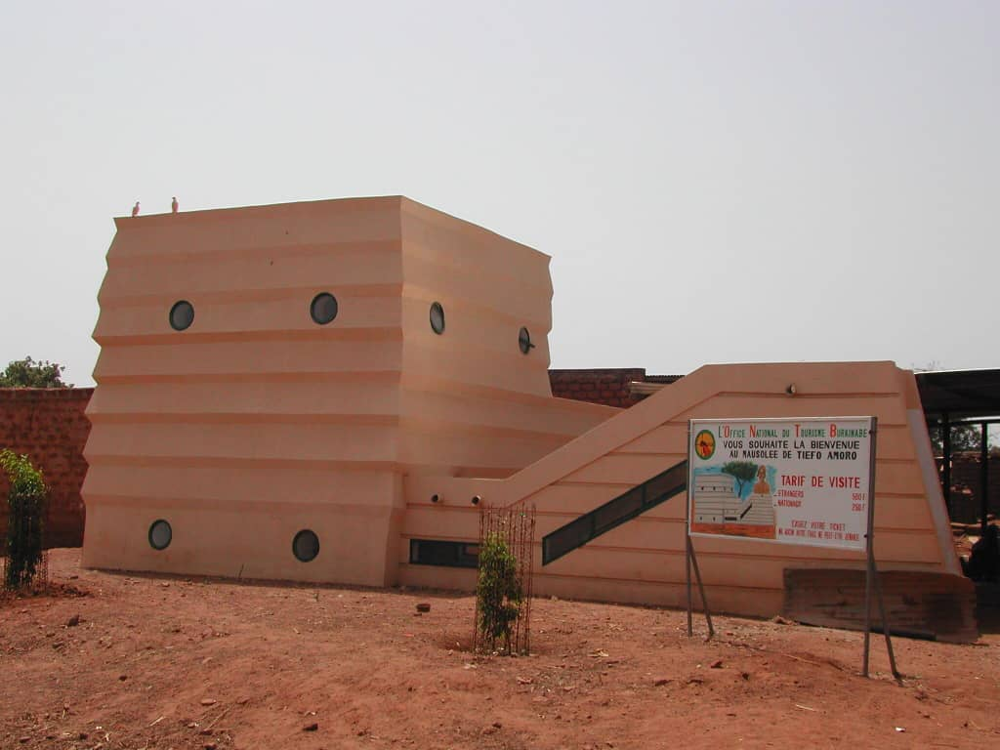

Le Mausolée Tiéfo Amoro
Description et Historique: 11ème chef de guerre, Tiéfo AMORO a régné de 1890 à 1897 sur le village de Noumoudara (village des forgerons) à 25 km de la commune de Bobo-Dioulasso. Un mausolée a été érigé en sa mémoire en 2002 par l’ancien ministre chargé de la Culture monsieur Mahamoudou OUEDRAOGO afin de perpétuer l’héroïsme et la bravoure de l’émérite Chef Tiéfo pour qui on ne tarit pas d’éloges.